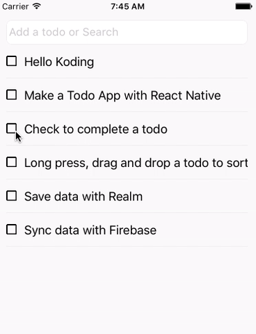

This post walks you through the process of creating a Todo App for iOS and Android devices with React Native.
If you're new to React Native or CSS Flexbox, it'd be best to walk your way through: Getting Started React Native Layout with Flexbox
What you'll build

What you'll need
- MacOS, Xcode
- NodeJS
- NPM
- React Native 0.28+
Stack
- ES6
- React Native
- CSS Flexbox
Project structure
├── android
├── ios
├── src
│ ├── CheckBox.js
│ ├── ListViewItem.js
│ ├── ListView.js
│ ├── OmniBox.js
│ ├── TodoModel.js
│ └── Utils.js
├── index.android.js
├── index.ios.js
└── package.json
Project dependencies
Let's start
Init project
react-native init TodoApp
cd TodoApp
Data Model
Utils
We define some common functions
Make a CheckBox
React Native does not have CheckBox, so we make one.
Install react-native-vector-icons
npm install react-native-vector-icons --save
react-native link
onPress={this.props.onCheckBoxPressed}: when checkbox's clicked, the onCheckBoxPressed function of parent component 'd be called.
OmniBox
It's a TextInput, can search on typing or add a new Todo (if not existed) on pressing Return/Enter.
onChange={this.onChange}: handles Search.
onKeyPress={this.onKeyPress}: handles Add new a todo.
this.props.updateDataList(dataList);: the updateDataList function of parent component'd be called.
ListViewItem
We'll build a ListViewItem to show TodoModel
Sortable ListView
It shows Todo list. User can drag and drop a Todo item to sort.
Install react-native-sortable-listview
npm install react-native-sortable-listview --save
Final piece
Run
react-native run-ios
Source code
git@github.com:hellokoding/todoapp-reactnative.git
https://github.com/hellokoding/todoapp-reactnative
Todo App with React Native series: Todo App with React Native Todo App with React Native, Realm